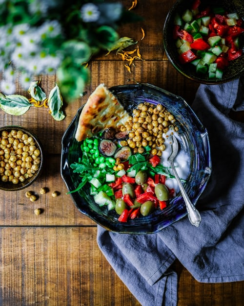

EXPLORE MORE! Search by Chef, Ingredient, Recipe Type and More!

David Elofsan
Master Chef
New York, USA
If you're looking to cook food that "feels like home",
you've found the right place!
I have been a professional chef for over 10 years,
specializing in fusion cuisen that combines comfort
food familiarity, real ingridients & finer dining.


load more